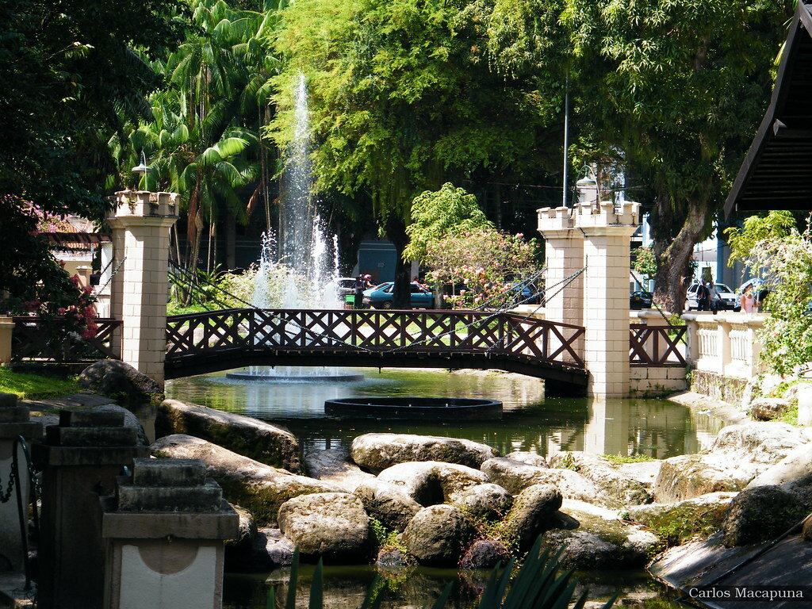

18 de junho de 2024

O Teatro da Paz, localizado em Belém, Pará, é um dos teatros mais antigos e importantes do Brasil. Construído durante o auge da economia da borracha, começou a ser erguido em 1869 e foi inaugurado em 15 de fevereiro de 1878. Projetado no estilo neoclássico pelo engenheiro Gaspar José dos Reis, o teatro se tornou um centro cultural de destaque, recebendo companhias de ópera, teatro e dança.
Com o declínio da economia da borracha no início do século XX, o teatro enfrentou dificuldades, mas passou por várias restaurações importantes, especialmente em 1960 e 2002. Em 1963, foi tombado pelo Instituto do Patrimônio Histórico e Artístico Nacional (IPHAN), reconhecendo sua importância histórica.
Hoje, o Teatro da Paz é um importante palco cultural da Amazônia, com uma programação diversificada e também é um ponto turístico significativo de Belém. Ele simboliza a era de prosperidade da região e continua a ser um símbolo de sua herança cultural e artística.
18 de junho de 2024

O Mercado Ver-o-Peso, localizado em Belém do Pará, é um dos mercados mais antigos e emblemáticos do Brasil. Sua história remonta ao período colonial, quando foi estabelecido como um ponto de comércio entre colonos europeus e indígenas da região amazônica. O nome "Ver-o-Peso" vem do tempo em que os produtos eram pesados para a cobrança de impostos.
O mercado foi oficialmente inaugurado em 1625 e desde então tem sido um centro vital de atividade comercial na Amazônia. Ao longo dos séculos, o Ver-o-Peso expandiu-se e tornou-se um complexo mercado que oferece uma variedade impressionante de produtos regionais, incluindo frutas tropicais, peixes frescos, ervas medicinais, artesanato local, além de ser um ponto importante para a venda de produtos típicos da região.
Além de sua importância econômica, o Ver-o-Peso é também um local cultural e turístico significativo, refletindo a diversidade e a riqueza da cultura paraense. O mercado é frequentado por moradores locais, turistas e comerciantes de toda a região, tornando-se um espaço vibrante e pulsante que captura a essência da vida na Amazônia. Ao longo dos anos, o Mercado Ver-o-Peso tornou-se um ícone de Belém e uma parte fundamental da identidade cultural da cidade.
18 de junho de 2024

A Basílica de Nossa Senhora de Nazaré, em Belém, é um importante santuário católico no Brasil, dedicado à Virgem Maria. Sua história remonta ao século XVIII, quando a imagem de Nossa Senhora de Nazaré foi encontrada por um pescador nas águas do rio Guamá. A descoberta da imagem foi considerada um milagre, e desde então, a devoção a Nossa Senhora de Nazaré cresceu significativamente na região amazônica.
A primeira capela dedicada à imagem foi construída em 1700, dando início ao culto religioso no local. Com o tempo, a devoção à Virgem de Nazaré se espalhou, e a capela original foi substituída por uma igreja maior. A construção da atual Basílica de Nazaré começou em 1909, em estilo neoclássico, e foi concluída em 1923.
Ao longo dos anos, a Basílica de Nazaré se tornou um importante centro de peregrinação e devoção, especialmente durante o Círio de Nazaré, uma das maiores celebrações religiosas do Brasil, que ocorre anualmente em outubro. Milhares de fiéis se reúnem para homenagear Nossa Senhora de Nazaré e participar das festividades religiosas que envolvem procissões, missas e manifestações de fé.
A Basílica de Nazaré é não apenas um marco religioso, mas também um símbolo cultural e histórico de Belém e da região amazônica, atraindo visitantes de todo o país e do mundo. Sua história está profundamente entrelaçada com a identidade e a devoção do povo paraense à Virgem de Nazaré.
üìç Bas√≠lica de Nazar√© Pra√ßa Justo Chermont, s/n - Nazar√©, Bel√©m - PA, 66035-505, Brasil
18 de junho de 2024
O Forte do Castelo, situado em Belém do Pará, é uma construção histórica que remonta ao período colonial do Brasil. Foi erguido no século XVII, entre os anos de 1626 e 1629, durante o domínio colonial português, com o objetivo de proteger a cidade de invasões estrangeiras e ataques de piratas que frequentavam a região amazônica.
Originalmente construído em madeira, o Forte do Castelo foi posteriormente reconstruído em alvenaria, ganhando o formato de uma estrela, típico das fortificações militares da época. Sua localização estratégica, às margens do rio Guamá, permitia um controle eficaz das vias fluviais que davam acesso à cidade de Belém.
Ao longo dos séculos, o Forte do Castelo desempenhou um papel crucial na defesa da região amazônica, sendo palco de diversos episódios históricos, como batalhas contra invasores estrangeiros e confrontos durante períodos de instabilidade política. Com o passar dos anos, a importância militar do forte diminuiu, e ele foi sendo adaptado para outros usos, como prisão e quartel.
Atualmente, o Forte do Castelo é um importante patrimônio histórico e cultural de Belém, aberto à visitação pública. Além de sua relevância histórica, o local oferece uma vista privilegiada da cidade e do rio Guamá, atraindo turistas e moradores locais interessados em conhecer mais sobre a história e a arquitetura da região. O forte também é palco de eventos culturais e exposições, contribuindo para preservar e difundir a memória histórica da Amazônia.
18 de junho de 2024

O Cinema Olympia é um marco histórico e cultural na cidade de Belém, no estado do Pará, Brasil. Inaugurado em 1912, é considerado o cinema mais antigo em funcionamento do país. Seu nome foi inspirado nos Jogos Olímpicos da Grécia Antiga, refletindo a grandiosidade e importância que se pretendia dar ao empreendimento.
Desde sua inauguração, o Cinema Olympia desempenhou um papel significativo na vida cultural da cidade, oferecendo uma variedade de filmes e eventos para a comunidade local. Ao longo dos anos, passou por várias fases e adaptações, mas sempre mantendo sua essência como um espaço de entretenimento e encontro para o público.
Além de exibições de filmes, o Cinema Olympia também sediou eventos culturais, como festivais de cinema, palestras e apresentações artísticas. Sua arquitetura tradicional e atmosfera histórica o tornam um local único, que atrai tanto amantes do cinema quanto entusiastas da história e da cultura.
Mesmo com o avanço da tecnologia e a ascensão de novas formas de entretenimento, o Cinema Olympia permanece como um símbolo de resistência cultural, mantendo viva a tradição cinematográfica e preservando a memória do cinema no Brasil.
18 de junho de 2024
A Praça do Relógio é uma importante praça localizada na cidade de Belém, no estado do Pará, Brasil. Seu nome deriva do imponente relógio que fica em seu centro, uma característica marcante e icônica da região.
Inaugurada em 1914, a Praça do Relógio tem sido ao longo dos anos um ponto de encontro popular para moradores locais e visitantes. Além do relógio, a praça é adornada por jardins bem cuidados, bancos para descanso e espaços para lazer.
A praça é palco de diversos eventos culturais, sociais e políticos ao longo do ano, como shows musicais, feiras de artesanato, manifestações populares e comemorações cívicas. Sua localização central a torna também um importante ponto de referência e de convergência de diferentes atividades urbanas.
Além de seu valor como espaço público, a Praça do Relógio possui significado histórico e simbólico para os habitantes de Belém, representando um importante aspecto da identidade da cidade e contribuindo para a sua rica vida social e cultural.
18 de junho de 2024
A Estação das Docas é um complexo turístico localizado na cidade de Belém, no estado do Pará, Brasil. Situada às margens da Baía do Guajará, a Estação das Docas é um importante ponto de referência e de lazer na região.
O complexo ocupa uma área que antes era utilizada para o armazenamento e transporte de cargas nos antigos armazéns portuários. Após um processo de revitalização, a área foi transformada em um espaço multicultural que preserva a arquitetura histórica dos armazéns enquanto oferece diversas opções de entretenimento, gastronomia, cultura e compras.
A Estação das Docas conta com diversos restaurantes, bares, lojas de artesanato, espaços culturais e áreas de convivência ao ar livre. O local também é palco de eventos culturais, como shows musicais, apresentações de dança, exposições de arte e feiras temáticas.
Além de sua importância como destino turístico, a Estação das Docas contribui para a valorização e preservação da memória histórica e cultural de Belém, oferecendo aos visitantes uma experiência única que combina história, lazer e gastronomia à beira da baía.
18 de junho de 2024
A Praça Batista Campos é um dos espaços públicos mais emblemáticos e queridos de Belém, Pará, Brasil. Inaugurada em 1897, a praça é nomeada em homenagem ao médico e político paraense Antônio Lemos Batista Campos, que desempenhou um papel importante no desenvolvimento urbano da cidade.
Localizada no coração da capital paraense, a Praça Batista Campos é um verdadeiro oásis urbano, caracterizado por suas áreas verdes bem cuidadas, jardins floridos, fontes e um coreto central. É um local frequentado por moradores locais e turistas, que buscam relaxar, praticar atividades físicas, fazer piqueniques ou simplesmente apreciar a paisagem.
Além de ser um espaço de lazer e convivência, a Praça Batista Campos também abriga eventos culturais, como apresentações de música ao vivo, feiras de artesanato, exposições de arte e manifestações culturais. Seu coreto é frequentemente palco de apresentações de bandas locais e atividades culturais diversas.
A praça também é cercada por prédios históricos, incluindo casarões antigos que agora abrigam instituições culturais, galerias de arte, restaurantes e cafés. Isso contribui para o charme e a atmosfera única da Praça Batista Campos, tornando-a um verdadeiro símbolo da cidade de Belém.
Venha viver uma experiência inesquecível no Teatro da Paz, em Belém do Pará! Admire sua arquitetura neoclássica, participe de visitas guiadas e desfrute de apresentações de óperas, balés, peças teatrais e concertos.
üóìÔ∏è Visita√ß√£o: Aberto de ter√ßa a domingo, com eventos noturnos. Consulte a programa√ß√£o no site oficial.
O Cine Olympia, localizado em Belém, é o cinema mais antigo em funcionamento no Brasil, inaugurado em 1912. Atualmente, é gerido pela Fundação Cultural de Belém (FUNBEL) e exibe filmes fora do circuito comercial com entrada gratuita. Sua programação é variada e dedicada a filmes clássicos e independentes, promovendo a cultura cinematográfica na cidade.
Para horários específicos e a programação atualizada, você pode consultar o blog oficial do Cine Olympia
A Basílica de Nazaré, localizada em Belém, no Brasil, é um importante centro de peregrinação e fé católica. A programação da Basílica pode variar ao longo do ano, mas geralmente inclui missas diárias, novenas em preparação para festividades específicas, celebrações litúrgicas especiais em datas religiosas importantes, como o Natal e a Semana Santa, além de eventos como procissões e momentos de devoção mariana.
Os horários das missas podem variar, geralmente acontecendo várias vezes ao longo do dia para atender aos fiéis. Durante eventos especiais, como a festa de Nossa Senhora de Nazaré em outubro, a programação pode ser ainda mais intensa, com missas solenes, procissões e outras atividades religiosas e culturais.